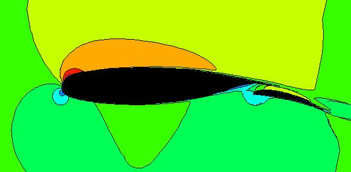
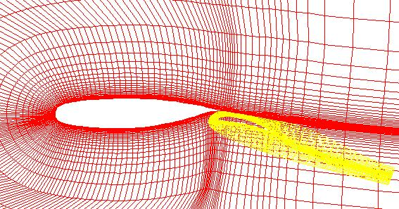
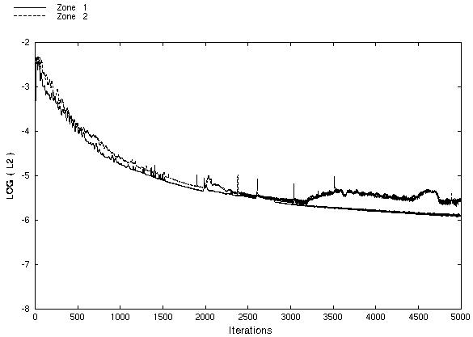
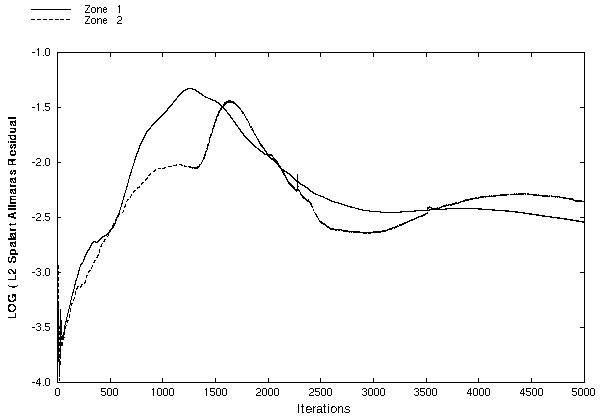
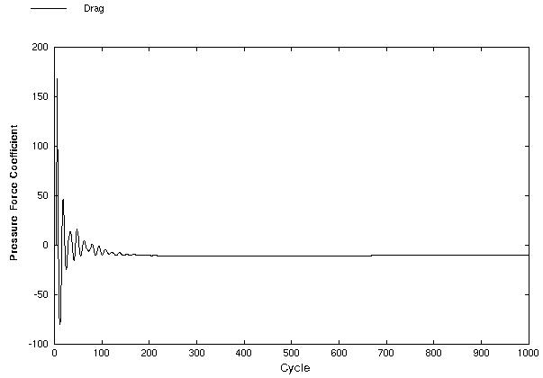
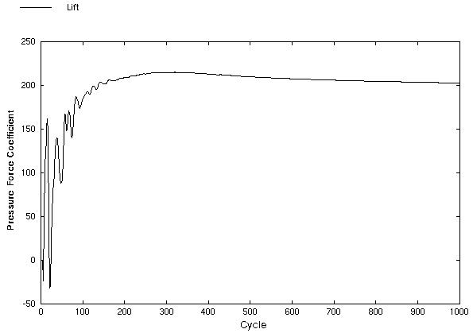
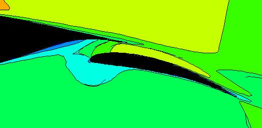
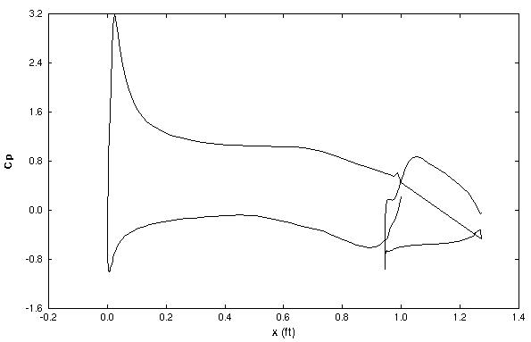

This study is an example study demonstrating the use of the overlapping (Chimera) capabilities of WIND and involves an airfoil with a flap. The grid about the flap is contained wholly within the grid of the main airfoil. Experimental data obtained by NLR is available for this configuration; however, at this time, the experimental data has not been obtained by the author.
All of the archive files of this validation case are available in the Unix compressed tar file nlrflap01.tar.Z. The files can then be accessed by the commands
uncompress nlrflap01.tar.Z
tar -xvof nlrflap01.tar
The computational process starts from an existing grid. For this study, the grid is a two-zone, two-dimensional grid in which each each zone is a C-grid. Figure 2 shows the two zones with the overlapping.

Zone 1 is wrapped around the airfoil and has dimensions of 205 x 59. The airfoil surface and wake is located at the J1 boundary. The I-coordinate starts at the downstream boundary, intersects the trailing edge at I29, proceeds along the bottom of the airfoil, around the leading edge, downstream along the top of the airfoil, intersects the trailing edge again at I177, and continues to the outflow boundary. The JMAX grid line is the farfield boundary of the flow domain.
Zone 2 has dimensions of 179 x 33 is wrapped around the flap. The airfoil surface and wake is located at the J1 boundary. The I-coordinate starts at the downstream boundary, intersects the trailing edge at I21, proceeds along the bottom of the airfoil, around the leading edge, downstream along the top of the airfoil, intersects the trailing edge again at I159, and continues to the downstream boundary.
The grid is contained in a PLOT3D grid file named nlrflap.x (unformatted, multi-zone, 3D, whole).
The CFCNVT utility is used to convert the PLOT3D grid file to the common grid (.cgd) file format for WIND. This is done using the command
cfcnvt < cfcnvt.x.com
where the file cfcnvt.x.com is a command input file. A common grid file named nlrflap.cgd is created. For simulating planar flows in WIND, the three-dimensional flow equations are applied. This requires that the grid plane be in the z = 1.0 plane, which is the case in the PLOT3D grid file.
This study has freestream flow conditions as summarized in Table 1 below. The computational flow field is initialized with uniform flow corresponding to these freestream conditions.
| Mach | Pressure (psia) | Temperature (R) | Angle-of-Attack (deg) | Angle-of-Sideslip (deg) |
|---|---|---|---|---|
| 0.2 | 14.7 | 520.0 | 10.0 | 0.0 |
The boundary conditions must now be specified for the grid and this is done with the GMAN utility. First, the boundary condition types are summarized. An INVISCID WALL boundary condition is applied at the J1 boundaries along the airfoil and flap. An INFLOW OUTFLOW boundary condition is applied at the JMAX boundary of zone 1, which should all be subsonic inflow at the freestream conditions. The I1 and IMAX boundaries of zone 1 are specified as CONFINED OUTFLOW boundaries. The CONFINED OUTFLOW allows the static pressure to be directly specified and is set to be equal to the freestream pressure. The C-grids have boundaries aft of the trailing edges that are COUPLED with the same zone. The overlapped regions and boundary conditions must also be defined.
The procedure for setting the boundary conditions using GMAN with the graphics interface is as follows
gman
file nlrflap.cgd
units fss
swi
Pick SHOW (upper right panel)
Pick SHOW SURFACES
Pick PICK ZONE
Pick 1
Pick PICK K-PLANE
At this point the grid for zone 1 will be displayed since there is only one K grid plane, K=1. Moving the mouse so that the cross-cursor is near the upper-right most grid point and clicking the left mouse button will cause the coordinates of that point to be displayed in the middle right panel. It should indicate that the coordinates of point (205,59,1) are x = 11.657 ft, y = 10.567 ft, and z = 1.0 ft. Note that the units are feet, which was desired from the units fss command. The z = 1.0 ft is required by WIND for two-dimensional domains.
The grid for zone 2 can be displayed with the following commands
Pick PICK ZONE
Pick 2
Pick PICK K-PLANE
First, indicate that the boundary conditions of zone 1 for overlapping grids need to be set.
Pick BOUNDARY COND
Pick zone 1
Pick OLAP
Pick MODIFY BNDY
Notice that the K1 grid plane of zone 1 is automatically displayed. The K1 grid planes of zone 2 can also be displayed by entering the following
Pick SHOW OTHER ZONE
Pick zone 2
Pick PICK K-PLANE
Start the actual hole cutting by indicating that a cutter surface is being defined and clearing the surface definition to assure that cutter definition is starting from scratch.
Pick OLAP GENERATION
Pick GENERATE HOLES
Pick SET/SHO CUTTER
Pick CUTTER SURFACE
Pick CLEAR SURF DEF
The cutter surfaces are defined based on grid segments from zone 2. The grid segments must connect end-to-end to form a closed surface (which for a planar grid is simply a rectilinear line). Each segment is defind by the zone and starting and ending grid coordinates. For a planar grid, the k-coordinates are always k=1. Further, either the i- or j-coordinate should be repeated for each segment. The zone numbers and (i,j,k) indices are entered within the bottom panel of the GMAN display in response to the prompts. The grid segments in zone 2 are defined as follows
Pick SET SRF ZON
Enter 2 for zone 2 (followed by a carriage return [ret])
Pick SET SURF RANGE
Enter first corner indices = 17 23 1 [ret]
Enter second corner indices = 163 23 1 [ret]
Pick SET SURF RANGE
Enter first corner indices = 17 1 1 [ret]
Enter second corner indices = 17 23 1 [ret]
Pick SET SURF RANGE
Enter first corner indices = 163 1 1 [ret]
Enter second corner indices = 163 23 1 [ret]
The cutter surface is now assigned a label. Numbers 1-7 are reserved. Here the label is assigned the number 10.
Pick on LABEL (lower right hand corner of the screen)
Enter 10 for the label number (followed by [ret])
Perform the actual hole cutting based on the specified cutter surface.
Pick GENERATE HOLE
At this point, the hole is generated and displayed. The bottom display window should indicate that "72 hole points were set".
Pick OLAP GENERATION (top left panel)
Pick GENERATE FRINGE
Pick FRG MODE HOLE
Pick GENERATE FRINGE (from second panel from top on left)
At the bottom panel of the display, a sentence will indicate that "52 fringe points were set".
Pick OLAP GENERATION
Pick SET FRINGE BND
Pick COUPLE
Pick zone 2
Pick OLAP
Pick COUPLE
Pick BOUNDARY COND (at top left panel)
Pick YES, SAVE CHANGES to save the boundary conditions
During this procedure, in the bottom panel, it was displayed that 52 of 52 points were coupled and that the "Grid/iblank has been updated".
Pick INDENTIFY PNTS.
Pick ZONE 2 OLAP
This will display the boundary conditions as coupled to zone 2.
Pick PICK ZONE/BNDY
Pick zone 2
Pick OLAP
Pick MODIFY BNDY
Pick GENERATE FRINGE
Pick FRG MODE OUTER
Pick BOUND I1 ON (toggle to ON)
Pick BOUND IMAX ON (toggle to ON)
Pick BOUND JMAX ON (toggle to ON)
Pick on LABEL in the lower right hand corner of the screen
Enter 11 for the label number (followed by [ret])
Pick GENERATE FRINGE (from second panel from top on left)
During this procedure, the grid of zone 2 is displayed. At the end, the sentence "245 fringe points were set" is displayed in the bottom panel.
Now the boundary conditions on these fringe points are set as being coupled to zone 1.
Pick OLAP GENERATION
Pick SET FRINGE BND
Pick COUPLE
Pick zone 1
Pick OLAP
Pick COUPLE
Pick BOUNDARY COND (at top left panel)
Pick YES, SAVE CHANGES to save the boundary conditions
The display at the bottom indicates the "245 points were coupled out of 245 tried" and that the "Grid/iblank has been updated".
One can check that the boundary conditions have been set properly by displaying the boundary conditions,
Pick INDENTIFY PNTS.
Pick ZONE 1 OLAP
Pick CHECK (upper right panel)
Pick RUN FRNG CHKS
If the boundary conditions are all set correctly, then a message will be displayed, "Congratulations, no errors found". However, for this case, a message is displayed that "91 volume ratios exceed the tolerance".
Pick BOUNDARY COND
Pick PICK ZONE/BNDY
Pick zone 1
Pick I1
Pick MODIFY BNDRY
Pick CHANGE ALL
Pick CONFINED OUTFLOW
Pick BOUNDARY COND
Pick YES to save the boundary condition information
During this process the grid for the I1 boundary of zone 1 is displayed. The text in the bottom panel will indicate the number of points that were changed. The boundary specification can be checked by
Pick IDENTIFY PNTS.
Pick CONFINED OUTFLOW
All the points specified as confined outflow will be colored.
The IMAX boundary is also specified as a CONFINED OUTFLOW,
Pick PICK ZONE/BNDY
Pick IMAX
Pick MODIFY BNDRY
Pick CHANGE ALL
Pick CONFINED OUTFLOW
Pick BOUNDARY COND
Pick YES to save the boundary condition information
The J1 boundary of zone 1 is partially the airfoil surface and partially a coupled boundary. Pick the J1 surface of zone 1,
Pick PICK ZONE/BNDY
Pick zone 1
Pick J1
First, the airfoil surface is specified as a viscous wall,
Pick on Work Subarea (lower right hand corner of the screen)
Enter the first corner indices = 29 [ret]
Enter the second corner indices = 177 [ret]
Pick MODIFY BNDRY
Pick CHANGE ALL
Pick VISCOUS WALL
A message in the bottom window will display that "149 points were changed". Now set the subarea as the lower portion of the coupled boundary
Pick on Work Subarea (lower right hand corner of the screen)
Enter the first corner indices = 1 [ret]
Enter the second corner indices = 29 [ret]
Pick COUPLE
Pick zone 1
Pick J1
Pick COUPLE
A message in the bottom window will display that "28 points were changed". This means that 28 points, which does not include the trailing edge point, were set as coupled to the J1 boundary. GMAN only only needs to know the boundary for coupling rather than a grid point range.
One can view the current settings for the J1 boundary by selecting the "IDENTIFY PNTS" menu item and toggleling the boundary conditions,
Pick IDENTIFY PNTS.
Pick VISCOUS WALL
Pick ZONE 1 J1
Pick ZONE 1 J1
Pick UNDEFINED
One should be able to realize that the "ZONE 1 J1" boundary conditions are set for the J1 boundary grid points from I1 to I28 and the "UNDEFINED" boundary conditions are set for the J1 boundary grid points from I178 to I205. These boundary grid points are now set as coupled to the J1 boundary
Pick on Work Subarea (lower right hand corner of the screen)
Enter the first corner indices = 177 [ret]
Enter the second corner indices = MAX [ret]
Pick COUPLE
Pick zone 1
Pick J1
Pick COUPLE
Note that above, "MAX" is used to indicate the last grid point of the boundary. If one now does the "IDENTIFY PNTS" menu item, there now are no undefined boundary grid points.
The JMAX boundary is now set as an inflow outflow boundary,
Pick PICK ZONE/BNDY
Pick JMAX
Pick MODIFY BNDRY
Pick CHANGE ALL
Pick INFLOW OUTFLOW
Pick BOUNDARY COND
Pick YES to save the boundary condition information
Pick PICK ZONE/BNDY
Pick zone 2
Pick J1
Pick on Work Subarea (lower right hand corner of the screen)
Enter the first corner indices = 21 [ret]
Enter the second corner indices = 159 [ret]
Pick MODIFY BNDRY
Pick CHANGE ALL
Pick VISCOUS WALL
Pick on Work Subarea (lower right hand corner of the screen)
Enter the first corner indices = 1 [ret]
Enter the second corner indices = 21 [ret]
Pick COUPLE
Pick zone 2
Pick J1
Pick COUPLE
Pick on Work Subarea (lower right hand corner of the screen)
Enter the first corner indices = 159 [ret]
Enter the second corner indices = MAX [ret]
Pick COUPLE
Pick zone 2
Pick J1
Pick COUPLE
Pick BOUNDARY COND
Pick YES to save the boundary condition information
Pick LIST
Pick LIST OPTIONS
Pick BNDY CND REPORT
Pick FRINGE REPORT
Pick TOP
Pick END
Pick YES-TERMINATE
The journal file gman.jou can be saved as gman.com for a batch-type of operation. Then GMAN can be run as
gman < gman.com
where the file gman.com is a command input file. The commond grid file nlrflap.cgd is updated in the process.
The computation is performed using the time-marching capabilities of WIND to march to a steady-state (time asymptotic) solution. Local time stepping is used at each iteration. The time-marching is performed until convergence criteria is achieved.
The input data file for WIND is nlrflap.dat. The freestream keyword indicates that the static freestream flow conditions are specified as Mach number, pressure (psia), temperature (R), angle-of-attack (degrees), and angle-of-sideslip (degrees). The downstream pressure keyword indicates that the freestream static pressure is to be used at the CONFINED OUTFLOW boundaries. The turbulence model keyword indicates that the Spalart-Allmara turbulence model is to be used. The loads keyword indicates that the lift on the airfoil is to be integrated every 20 iterations and displayed in the list file. This will be used to evaluate the convergence of the solution. The converge order keyword indicates that the computation will stop if the L2 norm of the solution drops by 5 orders-of-magnitude. The cycles keyword indicates that 1000 cycles will be run. The iterations per cycle keyword indicates that 5 iterations will be run per cycle. The cfl# keyword indicates that a CFL number of 1.5 will be used. By default, WIND uses local CFL number to determine the time-step size.
This computation is performed using parallel processing. A multi-processor control (.mpc) file is required and is created as nlrflap.mpc.
The WIND solver is run by entering
wind -runinplace -dat nlrflap -mp -parallel
This runs the wind script which sets up the problem for solver. The runinplace option indicates that WIND is to be run in the current directory. The dat option indicates that the input data file is nlrflap.dat. The mp and parallel indicate that a parallel computation is to be performed. Further details and options for the wind script can be found in the WIND documentation (wind script). A brief description of script options can be listed by typing
wind -help
Some initial interactive prompts ask for information to set up the computation. First, select 1 to run the Production version.
The next few questions ask about "Output data", "Mesh file", and "Flow data file" file names. Entering a carriage return will select the default names. A common flow data file nlrflap.cfl does not currently exists, so WIND initialize the flow from the freestream conditions and creates the new flow data file.
The next question allows a choice between running the solution in real-time (interactive) or submitting it to a queue. First, try running it interactively by selecting 1.
The next question asks about the remote directory. Enter a return.
The next questions asks whether the output should be written to the screen or to a list file nlrflap.lis. Enter n to create a list file.
Some file information will be displayed. A final carriage return will cause the job to be submitted. One can view the progress of the computation by opening another window and typeing out the nlrflap.lis file.
The list file is nlrflap.lis and contains the output from the computation and lists the residual information for both the flow equations and the turbulence model equation for each iteration. The integrated lift is also output every 20 iterations.
The flow data file is nlrflap.cfl and contains the final solution.
There are several ways to examine the convergence of the solution. The RESPLT utility is used for these to read information from the list file nlrflap.lis. First the L2 norm of the residual of the conservation variables (change over a time step) can be read from the list file,
resplt < resplt.nsl2.com
The file resplt.nsl2.com is a command file containing the inputs for RESPLT to output the GENPLOT formatted plot data file named nsl2.gen of the residuals as a function of the iterations. This file can be plotted using CFPOST,
cfpost < cfpost.nsl2.com
where the file cfpost.nsl2.com is a command file containing the inputs for CFPOST. Fig. 3 shows the solution residual that is displayed by CFPOST.

The convergence information for the Spalart-Allmaras turbulence variable can be obtained from the list file using RESPLT,
resplt < resplt.sal2.com
The file resplt.sal2.com is a command file containing the inputs for RESPLT to output the GENPLOT formatted plot data file named sal2.gen of the residuals as a function of the iterations. This file can be plotted using CFPOST,
cfpost < cfpost.sal2.com
where the file cfpost.sal2.com is a command file containing the inputs for CFPOST. Fig. 4 shows the turbulence residual that is displayed by CFPOST.

A more significant indicator of solution convergence is to examine the convergence of the engineering quantity to be obtained from the analysis. Here it is lift and drag on the airfoil. The loads keyword in the input data file nlrflap.dat output this information into the list file nlrflap.lis. RESPLT is used to read this information and create plot files,
resplt < resplt.liftconv.com
The file resplt.liftconv.com is a command file containing the inputs for RESPLT to output the GENPLOT formatted plot data file named liftconv.gen of the residuals as a function of the iterations. This file can be plotted using CFPOST,
cfpost < cfpost.liftconv.com
where the file cfpost.liftconv.com is a command file containing the inputs for CFPOST. CFPOST will display in sequence the plots for drag, lift, and z-direction force. Fig. 5 and 6 shows the convergence of the drag and lift as displayed by CFPOST.


The CFPOST utility can be used to generate engineering information from the the data files. First, the PLOT3D files can be obtained for displaying in FAST,
cfpost < cfpost.plot3d.com
fast fast.com
The PLOT3D grid file (with i-blanking) created is named nlrflap_blank.x and the solution file is nlrflap.q. Both are unformatted, whole, 3D, and multi-zone. The FAST command file fast.com will read these files, and calculate the pressure and Mach number.
The CFPOST utility can generate color contour plots at a cut in the flowfield. However, a truly three-dimensional solution is needed to generate the surface. The Fortran program make3d.f reads in the PLOT3D grid and solution files output by cfpost.plot3d.com and creates PLOT3D grid and solution files with two K planes at z = 1.0 ft and z = 2.0 ft. A cut is then made at z = 1.5 ft. These PLOT3D files are then converted to common grid and common solution files. The process is as follows,
make3d
/bin/rm -rf n3d.cgd
cfcnvt < cfcnvt.n3dx.com
gman < gman.n3d.com
/bin/rm -rf n3d.cfl
cfcnvt < cfcnvt.n3dq.com
cfpost < cfpost.mach.com
Figure 1 shows the Mach number contours about the airfoil and flap. Figure 7 shows the Mach number contours in the region of the flap. The Mach number legend can be viewed here.

For an airfoil calculation, one piece of important information is the distribution of pressure coefficients on the airfoil and flap. CFPOST can directly output and plot this information,
cfpost < cfpost.cp.com
where cfpost.cp.com is the command input file for CFPOST. A GENPLOT file named cp.gen is created and plotted. The pressure coefficient is negative for pressures less than freestream, which occurs on the top of the airfoil. In plots of pressure coefficients for airfoils, the negative of the pressure coefficient is usually plotted to indicate that the lower pressure region is on the top of the airfoil and the high pressure region is on the bottom of the airfoil. This is done in the CFPOST command file cfpost.cp.com.

For an airfoil calculation, another piece of important information is the forces on the airfoil which result from pressure and skin-friction. CFPOST can be used to integrate these forces over the surface of the airfoil,
cfpost < cfpost.forces.com
where cfpost.forces.com is the command input file for CFPOST. A list file named forces.lis is created in which the force information is printed.
For a viscous computation, it is useful to examine how well the boundary layers were resolved. One measure of this is the y+ values at the grid points in the boundary layers. The list file forces.lis does contain information on the y+ values throughout the grid. To examine the boundary layer at a certain location, CFPOST can be used.
cfpost < cfpost.bl.com
The file cfpost.bl.com is a command file which writes out the x and y coordinates, u-velocity, v-velocity, and temperature at I165, which is on the top of the airfoil just before the trailing edge bl.gen.
The experimental data has not been obtained by the author.
No sensitivity studies were performed.
The computations were performed on a Silicon Graphics Octane workstation with 2 195 MHZ IP30 MIPS R10000 Processors. The Octane had a main memory of 896 Mbytes, an instruction cache size of 32 Kbytes, and a data cache size of 32 Kbytes. The computation of 5000 iterations required 6311.79 CPU seconds.
NLR.
This case was created on September 30, 1998 by John W. Slater, who may be contacted at
NASA Lewis Research Center, MS 86-7
21000 Brookpark Road
Cleveland, Ohio 44111
Phone: (216) 433-8513
e-mail: John.W.Slater@lerc.nasa.gov
{kind=link}